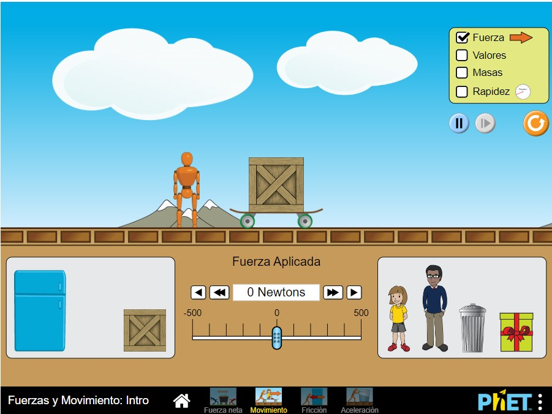
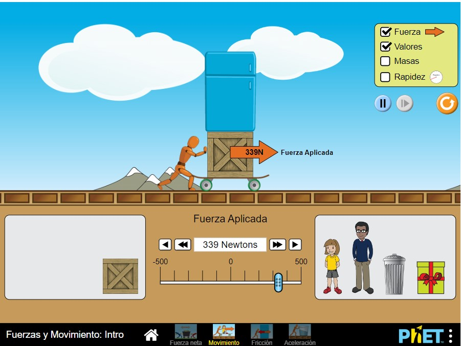
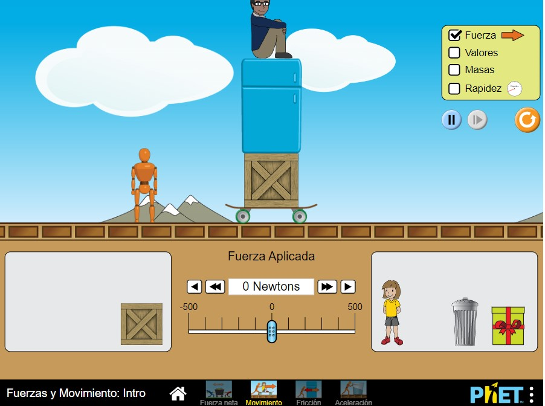

Bienvenido al PKET Interactive Simulador de Fuerza y Movimiento. Este simulador te permitirá explorar conceptos relacionados con la fuerza y el movimiento.
En primer lugar, selecciona los objetos y sus masas para el escenario de simulación. Puedes agregar múltiples objetos con diferentes masas para estudiar cómo interactúan entre sí.
Una vez que hayas configurado el escenario, podrás aplicar fuerzas a los objetos seleccionados. Puedes aplicar fuerzas en diferentes direcciones y magnitudes para observar cómo afectan el movimiento de los objetos.
Una vez que hayas aplicado las fuerzas, el simulador mostrará el movimiento resultante de los objetos en el escenario. Podrás ver cómo se aceleran, deceleran o mantienen su velocidad en función de las fuerzas aplicadas y las masas.
¡Diviértete experimentando con diferentes configuraciones y fuerzas! Observa cómo cambia el movimiento de los objetos y cómo se relaciona con las fuerzas aplicadas y las masas. Este simulador te brinda una forma interactiva de aprender conceptos de física relacionados con la fuerza y el movimiento.